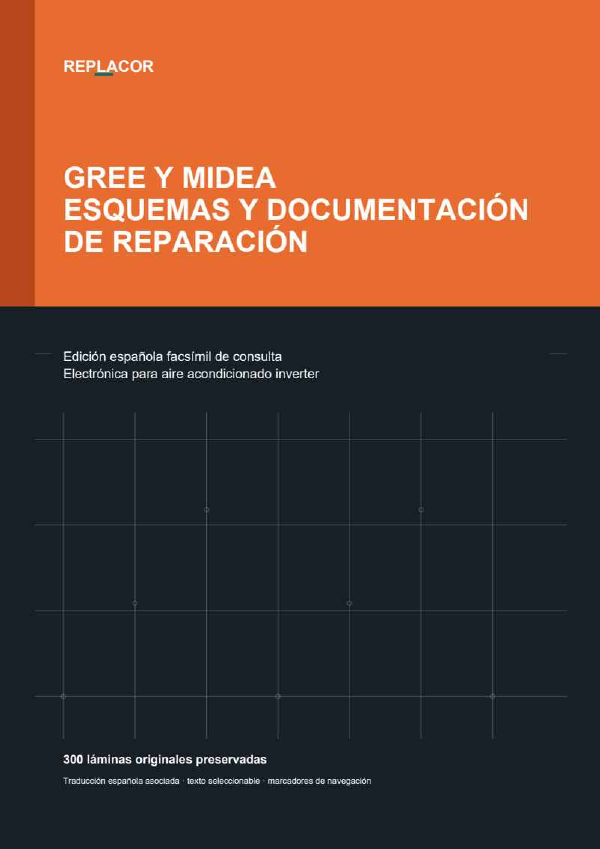

Nuevo · Trabajo conectado
Abrir mis proyectos
Mis proyectos técnicos
Reúne en un mismo trabajo los planos, resultados y mediciones generados por las herramientas.
Biblioteca técnica en crecimiento
Elige una herramienta. Cada apartado conserva su propia información y está preparado para incorporar nuevas utilidades sin mezclar contenidos.
Acceso directo
Entra solo en el apartado que necesitas en ese momento.
Reúne en un mismo trabajo los planos, resultados y mediciones generados por las herramientas.
Convierte presión en temperatura de evaporación o condensación y continúa, si lo necesitas, hasta estudiar el sistema paso a paso.
Errores, subcódigos, mandos, programaciones, marchas forzadas, buses, puesta en marcha y procedimientos por fabricante.
Distribuye las estancias en un plano completo y obtiene las medidas de cada tramo, salida y rejilla.
Dibuja los recintos, coloca rejillas y turbinas y obtiene caudales, recorridos y dimensiones conforme al uso seleccionado.
Dimensiona aspiración, líquido y descarga y resuelve retorno de aceite, sifones, dobles montantes y aislamiento.
Dimensiona una línea donde descargan varias máquinas y comprueba cómo crecen el caudal, el tubo y la caída en cada tramo.
Busca palabras, artículos y conceptos dentro de los reglamentos guardados de electricidad, climatización, refrigeración, fontanería y saneamiento.
Formación y consulta rápida sobre componentes, control electrónico, mediciones y diagnóstico de taller.
Aprende electrónica de placas a tu ritmo, desde los componentes fundamentales hasta las fuentes, el control y la etapa inverter.
Introduce lo que ves impreso en el componente y obtén todas las coincidencias oficiales posibles para contrastarlas en la placa.
Quince herramientas para resolver cálculos habituales de electrónica, alimentación y climatización.
Busca referencias, fabricantes, encapsulados, marcados, patillajes y parámetros para identificar el componente real.
Identifica conectores sin mezclar forma, variante, lado u orientación y consulta sus contactos con trazabilidad.
Busca y preselecciona Arduino, ESP, Raspberry Pi, STM32, FPGA y otras plataformas por uso, interfaces, arquitectura y riesgos.
Compara dos referencias con los datos reales de la biblioteca y descubre diferencias críticas o información pendiente.
Busca por la referencia de la placa y consulta síntomas, reparaciones confirmadas y soluciones alternativas revisadas.
Explora el motor de REPLACOR que ayuda a una IA a convertir diseños estructurados en diagramas eléctricos y electrónicos claros.
Biblioteca visual y curso interactivo para reconocer símbolos, seguir circuitos y comprender diagramas eléctricos y electrónicos.
Anota una idea o un fallo y aparecerá directamente en la lista de pendientes.
Proyecto vivo

Recurso técnico gratuito
Esquemas y documentación de reparación en una edición española completa para consulta técnica.
Proyecto independiente
Las aportaciones voluntarias ayudan a revisar documentación, ampliar fabricantes y desarrollar nuevas herramientas para la comunidad técnica.